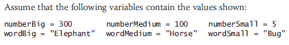
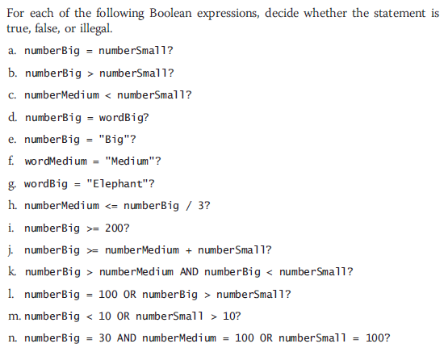

Sequence ✦ Selection ✦ Looping
Input/Output ✦ Calculation ✦ Declaring/Initializing Variables
Dual Alternatives ✦ Single Alternatives
IF some condition is true THEN
DO one process
ELSE
DO the other process
ENDIF
Dual Alternatives ✦ Single Alternatives
IF employee belongs to dentalPlan THEN
DO deduct $40 from employeeGrossPay
ENDIF
Iterations ✦ Repetition
One Entry Point
Every Structure should have one entry point and one exit point.
No Crossed Lines
Lines should never cross each other
Continous Flow
There should be a continuous flow to the program that makes logical sense.
Stacking Structures
Attaching structures end-to-end
Nesting Structures
Placing one structure within another
Recreate the program below using Flowgorithm
Design a flowchart and write pseudocode for a program that accepts three numbers from a user and displays a message if sum is greated than 10.
if statements ⛄ if/else statements ⛄ switch statements
Dual-alternative selection structure
Single-alternative selection structure
if statements ⛄ if/else statements ⛄ switch statements
int numOne = 2; int numTwo = 5;
if(numOne >= numTwo){
Console.WriteLine("2 is greater than 5");
}else{
Console.WriteLine("2 is not greater than 5");
}
Dual-alternative selection structure
int numOne = 2; int numTwo = 5;
if(numOne <= numTwo){
Console.WriteLine("5 is greater than 2");
}
Single-alternative selection structure
Compound Condition
Asks multiple questions before an outcome is determined
AND decision
Requires that both of two tests evaluate to true.
Requires a nested decision or a cascading if statement
Conditional AND operator
Ask two or more questions in a single comparison.
Each Boolean expression must be true for entire expression to evaluate to true
Compound Condition
Asks multiple questions before an outcome is determined
OR decision
Take action when one or the other of two conditions is true
Example - “Are you free for dinner Friday or Saturday?”
Conditional OR operator
Ask two or more questions in a single comparison.
Only one Boolean expression in an OR selection must be true to produce a result of true
Complete the following activity using the diagram below
 Range Check - Compare a variable to a series of values between limits
Use the lowest or highest value in each range
Adjust the question logic when using highest versus lowest values
Consider if end points of the range should be included
Yes: use >=or <=
No: use < or >
int LOWER_DRIVER_AGE = 16, UPPER_DRIVER_AGE = 120, age = 22;
if(age >= LOWER_DRIVER_AGE && age <= UPPER_DRIVER_AGE){
Console.WriteLine("Able to rent car for Harvey Car Rental");
}else{
Console.WriteLine("Not able to rent car from Harvey Car Rental");
}
MetLife Insurance company wants several lists of salesperson data. Design the flowchart and write pseudocode for the following: